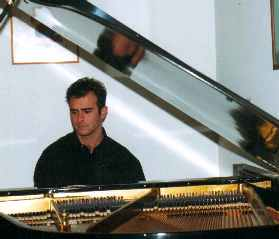
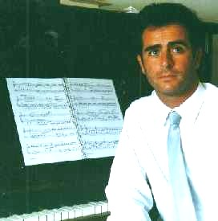

Esta nota cuenta con un archivo de audio, que puede tardar unos minutos en bajar; por otra parte al tratarse de una grabación de un concierto "en vivo", tiene interferencias, por lo que rogamos las disculpas del caso.
Tema noviembre de 2005
“Sentir la música en la piel…”
| Entrevista con Gustavo Zaka |
La mirada transparente y la expresión humilde y sincera…Este joven
y talentoso concertista de piano, impresiona al primer contacto, con su apariencia
solidaria, muy lejos de escrutar y menos aún, forjarse ideas previas
de las personas deliberando anticipadamente un trato atractivo para resultar
agradable.
Se muestra como es.
Nació en Córdoba Capital (Argentina) el 29 de mayo de 1969. Contando con ocho años de edad, por curiosidad comenzó a tocar el piano familiar de una hermana mayor que se encontraba de viaje y sintió un interés especial que trasmitió a su papá, quien pronto intervino para que se preparara con una profesora particular y luego en el Conservatorio Beethoven en el cual culminara sus estudios, conjuntamente con el ciclo secundario.
Lejos de darse una continuidad natural de su carrera
artística, el fallecimiento de su padre imponía apostar a algún
tipo de capacitación que permitiera una inserción laboral a corto
plazo. Así fue como ingresó en Ciencias Económicas en la
Universidad Nacional de su provincia y comenzó a trabajar en una escribanía,
implicando a ojos vista, la posibilidad de un ingreso y un camino que prometía
cierta estabilidad…
“En mi interior, no sabía realmente,
hacia dónde quería ir…ello exigía una decisión
que implicaba un gran temor: Descubrir mi vocación…”.
No obstante, seguía ejecutando el piano en
su casa y tomando clases con una profesora de Barrio Jardín, en Córdoba.
Sucedió un día del año 1985, que en las afueras del Living del hogar familiar, retumbaban los sonidos de aquellas notas del tañido instrumento, cuando pasaba por el lugar nuestro conocido pintor Álvaro Izurieta, que había ido a buscar a su hijo al Colegio e impactado por la ejecución de la música que podía oír, llamó a la puerta, deseando conocer el intérprete…Vestido con ropa apropiada para su tarea de taller de pintura y barbas de apariencia quijotescas, una hermana de Gustavo que no le reconoció, al asomarse para ver quién llamaba, asustada, lo confundió con un linyera… Al instante, se hizo presente la madre, que enseguida se dio cuenta de quien se trataba y totalmente intimidada, le pidió disculpas, invitándole a pasar.
Álvaro lo invitó a su taller, que
posteriormente visitó en variadas ocasiones pudiendo mantener en común
nutridas conversaciones, que le movilizaron internamente y su primera decisión,
fue dejar la Carrera de Ciencias Económicas:
“Logró que tintinearan cuerdas dentro
mío, que yo no había escuchado, pues no tenía claridad….
Todo es vano cuando se desoye la propia sensibilidad” “Me di cuenta
de la magnitud que tenía el piano en mi vida”…“Álvaro,
echó luz en aquello que estaba oculto y que me negaba a aceptar No dejaré
de agradecérselo mientras pueda, fue como un faro y representa para mí,
aún, un verdadero guía espiritual en la relación con el
arte”
En el año siguiente, ingresó en el
Conservatorio Provincial de Música de Córdoba “Félix
T. Garzón”, obteniendo en 1995 el título de Profesor Superior
de Piano, circunstancia en la que le fue concedido el Premio Anual del Rotary
Club de Córdoba.
Posteriormente, comenzó a gestionar una beca de perfeccionamiento en
Cuba, sin demasiada certeza en cuanto a su consistencia y fue entonces cuando
su gran amigo, el violinista Hernán Testa, lo invitó para perfeccionarse
en España; a lo que accedió, arribando a Madrid su capital, en
Septiembre de 1997.
“Sentí una especie de fuerza sobrenatural o un hada o hado que me protegía… Pues me fui, sabiendo solamente que tendría clases con un pianista ruso y que además, tendría que buscar trabajo para mantenerme…”
Entre ese año y el siguiente, tomó clases con Mtro Anatoli Povzoun, realizando asimismo estudios en la Universidad de Alcalá de Henares y posteriormente en el Real Conservatorio Superior de Música de Madrid. En el 2000 retornó a su ciudad, con la idea de volver a aquel país nuevamente, para continuar su perfeccionamiento… Sus lazos con España no se disolvieron: “Me siento conectado con ese país maravilloso que me conmueve y no puedo explicar porqué… Siento algo visceral, que me emociona y me atrapa”
A su regreso, si bien había perdido las ligazones laborales anteriores, ingresó como pianista en el seminario de Danzas del teatro Libertador e inició una paulatina actividad didáctica en diferentes instituciones y en su hogar, que conserva en la actualidad, las cuales le revelaron otro aspecto de su vocación, hasta entonces desconocido: El disfrute por efectuar tarea docente con niños y jóvenes, principalmente, pero también con adultos.
Prefiere
ejecutar música clásica, respondiendo a su formación,
pero no todos los autores le “llegan” de la misma manera:
|
 |
Si tuviera que quedarme con algunos autores clásicos, elegiría a Beethoven, especialmente sus composiciones relativas al tiempo en que padecía de sordera.
Trasmite ganas de seguir adelante, la idea de lucha…
Igualmente admiro a Debussy y a Schumann, aunque con este último existe
una barrera técnica. Su mensaje es complejo y enredado. Se necesita maduración…
convivencia con sus composiciones, para comprenderlas…”
“De las canciones populares me agrada escuchar tangos, folclore y los
boleros”
“Si el arte se torna como algo más
intelectual que emocional, para mí se genera una especie de bisagra,
es como si se hubiera apagado la luz...”
“Si la música no es inspirada, se transforma en matemáticas,
algo conformado con estructuras rígidas de composición”.
“En la medida que una actividad se vuelve cotidiana, se pierde lo mágico…”
“Cuando armo un programa para un recital , debe tener un sentido para mí; no puedo tocar obras con las cuales no pueda identificarme y comunicarme con el auditorio” “Pienso en el público al que va dirigido… pensando en “trazar un arco” como para mantener el interés por el contraste entre las obras, que siguen una cronología”
“Vivo con mi madre y hermanas, soy soltero.
No sé si en este momento querría tener hijos, es un desafío…
No obstante tengo un ahijado de un matrimonio amigo, Tobías, con quien
disfruto mucho”
En otros aspectos, disfruto de la jardinería, la fotografía y
de mi mascota que llamamos, "Yazz"”
 |
“En lo espiritual, no
me considero un místico. Tengo momentos de silencio en que trato
de comunicarme con Dios: Necesito de su abrigo, de su existencia”.
“Debo confesar que en mi ser existe cierta dualidad: Cuando debo proceder, siento el impulso ... pero entonces, toma ventaja lo racional… La consecuencia es que me esquivo, para no dejarme llevar por la intuición”. “Me aprecio como una persona emotiva, melancólica y sensible. Mantengo añoranzas por familiares que he perdido y ello me provocó mucho sufrimiento. También evoco la infancia, esas tristezas de un mundo que debería ser mucho más fácil para vivir y que lo podríamos hacer más accesible en todos los sentidos” |
“ Se necesita gente que se preocupe por hacer algo por los otros. Privilegiamos lo individual, sin considerar a quienes tenemos al lado…”
 Ir a Síntesis curricular
del artista.
Ir a Síntesis curricular
del artista.